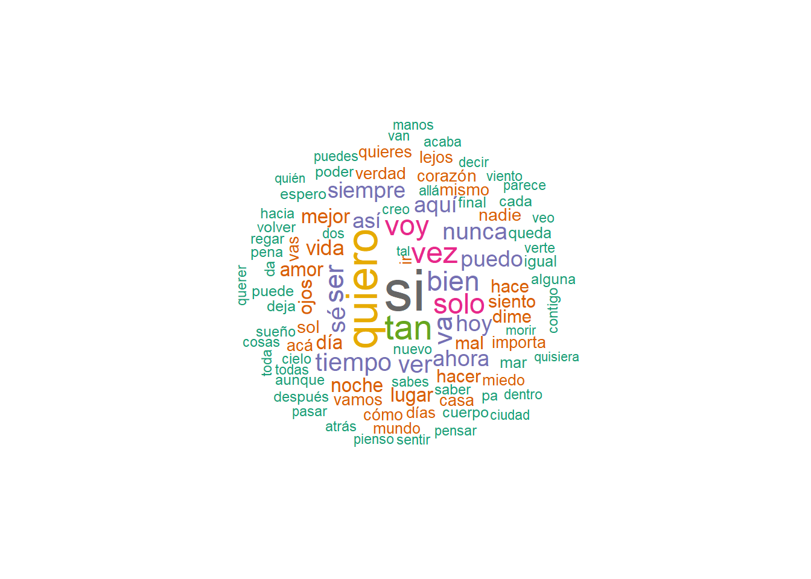

library(pacman)
p_load(httr,
jsonlite,
dplyr,
rvest,
DBI,
RSQLite,
stringi,
writexl,
readxl,
quanteda,
quanteda.textstats,
wordcloud
)
rm(list = ls()) # Descomentar si necesitamos limpiar entornoAnálisis de Letras
Extracción y análisis de letras de canciones
Introducción
Este proyecto utiliza R para realizar análisis de letras de canciones. Se usará la database de [LRCLIB](https://lrclib.net/db-dumps) y a partir de ella se crearán data frames para cada caso de estudio.
A lo largo de todo el código se irá ejemplificando el desarrollo de una investigación sobre las letras de un conjunto de bandas. basado en algún grupo social, estilo, . El ejemplo será el indie chileno actual, por tanto se van a ejemplificar todas las funciones dentro de este contexto. Esto incluye creación de corpus de texto, análisis de frecuencia de palabras en ciertas bandas o en conjuntos de bandas, etc.
En resumen se tiene que definir una lista de artistas para analizar múltiples bandas. Crear un corpus unificado que combine las letras de todas las bandas seleccionadas. Realizar análisis lingüísticos básicos (frecuencia de palabras, longitud promedio, etc.). Incluir ejemplos de visualizaciones para explorar patrones.
Tareas por hacer (ToDo):
Análisis:
Análisis de frecuencia léxica
Análisis de sentimientos
Análisis de complejidad textual
Reconocimiento de patrones gramaticales
Visualización de tendencias
Análisis literario
- Explorar la existencia de paquetes para estudios lingüísticos y literarios con reconocimiento de pátrones de lenguaje por gramática en español.
Instalación de librerías
Primero, cargamos las librerías necesarias:
Exploración de la base de datos
Aquí importamos la base de datos, sus tablas y el tipo de información que pueden contener
Importar base de datos
# Función para conectar a la base de datos
conectar_bd <- function(db_path = "db.sqlite3") {
if (!file.exists(db_path)) {
stop("El archivo de la base de datos no existe.")
}
conn <- dbConnect(SQLite(), dbname = db_path)
# message("Conexión exitosa a la base de datos: ", db_path)
return(conn)
}
# Función para desconectar de la base de datos
desconectar_bd <- function(conn) {
if (!inherits(conn, "DBIConnection")) {
stop("El objeto proporcionado no es una conexión válida.")
}
dbDisconnect(conn)
# message("Conexión cerrada correctamente.")
}
# Abrir conexión para hacer pruebas
conn <- conectar_bd()
# Listar tablas
# tables <- dbListTables(conn)
# print(tables)
desconectar_bd(conn)El resultado son las siguientes tablas:
| “_litestream_lock” | “_litestream_seq” | “flags” | “lyrics” | “missing_tracks” | “sqlite_sequence” |
| “tracks” | “tracks_fts” | “tracks_fts_config” | “tracks_fts_data” | “tracks_fts_docsize” | “tracks_fts_idx” |
Exploramos las tablas
# Conectamos a la base de datos
conn <- conectar_bd()
# Leer los primeros registros de tracks
dataTracks <- dbGetQuery(conn, "SELECT * FROM tracks LIMIT 10")
# Consultar la estructura de tracks
columnsTracks <- dbGetQuery(conn, "PRAGMA table_info(tracks)")
# Leer los primeros registros de lyrics
dataLyrics <- dbGetQuery(conn, "SELECT * FROM lyrics LIMIT 10")
# Consultar la estructura de lyrics
columnsLyrics <- dbGetQuery(conn, "PRAGMA table_info(lyrics)")
# Desconectamos la base de datos
desconectar_bd(conn)Estructura de las tablas de interés
Nos interesa particularmente la tabla tracks y la tabla lyrics, la tabla tracks_fts parece útil para búsquedas rápidas, tiene solo el nombre, el artista y el album de las canciones con texto normalizado.
Tracks
| Columna | Tipo | Descripción | Ejemplo |
|---|---|---|---|
id |
INT | Clave primaria de la tabla. Usada para identificar de manera única cada canción o pista. | 3 |
name |
TEXT | Nombre de la canción o pista. Es sensible a mayúsculas y minúsculas. | Wildest Dreams |
name_lower |
TEXT | Versión en minúsculas del nombre de la pista (name). |
wildest dreams |
artist_name |
TEXT | Nombre del artista que interpreta la canción. Sensible a mayúsculas y minúsculas. | ZAYN feat. Sia |
artist_name_lower |
TEXT | Versión en minúsculas del nombre del artista (artist_name). |
zayn feat sia |
album_name |
TEXT | Nombre del álbum en el que se encuentra la canción. | Dusk Till Dawn (Radio Edit) |
album_name_lower |
TEXT | Versión en minúsculas del nombre del álbum (album_name). |
dusk till dawn radio edit |
duration |
FLOAT | Duración de la canción en segundos. | 239 |
last_lyrics_id |
INT | Referencia a otra tabla (como lyrics) que almacena las letras de las canciones. Algunas no coinciden con id necesariamente. |
3 |
created_at |
DATE | Representa la fecha y la hora en que se creó el registro. | 2022-11-14 11:46:45.978+00:00 |
updated_at |
DATE | Indica la fecha (y hora) en que se actualizó por última vez el registro. | 2022-11-14 11:46:45.978+00:00 |
Lyrics
| Columna | Tipo | Descripción | Ejemplo |
|---|---|---|---|
id |
INT | Clave primaria de la tabla, única para cada registro de letras. | 3 |
plain_lyrics |
TEXT | Letras de la canción en formato simple (sin sincronización con la música). | Not tryna be indie\nNot tryna be cool\nJust tryna be in this\nTell me, are you too?\n\nCan […] |
synced_lyrics |
TEXT | Letras sincronizadas, con marcas de tiempo para seguir la canción mientras se reproduce. | [00:09.66] Not tryna be indie\n[00:12.30] Not tryna be cool\n[00:14.99] Just tryna be in […] |
track_id |
INT | Clave foránea que referencia la columna id en la tabla tracks. Esto vincula las letras con las canciones. |
3 |
has_plain_lyrics |
BOOLEAN | Indica si hay letras simples disponibles ([TRUE = 1] o [FALSE = 0]). |
1 |
has_synced_lyrics |
BOOLEAN | Indica si hay letras sincronizadas disponibles ([TRUE = 1] o [FALSE = 0]). |
1 |
instrumental |
BOOLEAN | Indica si la pista es instrumental y, por lo tanto, no tiene letras. ([TRUE = 1] o [FALSE = 0]). |
0 |
source |
TEXT | Fuente de las letras (La mayoría está en NA). | NA |
created_at |
DATE | Fecha y hora de creación del registro. | 2022-11-14 11:46:45.978+00:00 |
updated_at |
DATE | Fecha y hora de la última actualización del registro. | 2022-11-14 11:46:45.978+00:00 |
Definición de funciones de extracción
Ya teniendo claridad de la estructura de las tablas que nos interesan, comenzaremos a crear las funciones que nos permitan crear nuestros propios data frames extrayendo las columnas que nos interesan.
El ejemplo
Partiremos con una sola banda
Variables iniciales de ejemplo
artista_ej <- "Niños del Cerro"Normalizar nombre de artista
Normalizar los nombres de los artistas es estandarizar su “formato” para que sean uniformes, independientemente de cómo estén registrados en la base de datos o ingresados por el usuario. Esto es útil para evitar problemas como registros duplicados o consultas fallidas debido a diferencias en mayúsculas, espacios, acentos, o caracteres especiales, como la ñ en “Niños del Cerro”.
# Función de normalización
nrmlztxt <- function(texto) {
texto <- tolower(texto) # Minúsculas
texto <- stri_trans_general(texto, "Latin-ASCII") # Eliminar acentos y especiales
texto <- trimws(texto) # Eliminar espacios adicionales
return(texto)
}
artista_ej_nrm <- nrmlztxt(artista_ej)
print(artista_ej_nrm)[1] "ninos del cerro"Se ve que el resultado es “ninos del cerro”, sin espacios, ni ñ, ni mayúsculas.
Obtener canciones de un artista con las letras
buscarPorArtista <- function(nombre_artista) {
nombre_artista_nrm <- nrmlztxt(nombre_artista)
# Conectamos a la base de datos
conexion <- conectar_bd()
# Proteger el nombre para consultas SQL
nombre_artista_quoted <- dbQuoteString(conexion, nombre_artista_nrm)
# Consulta SQL con LIKE (búsqueda flexible) y campo normalizado en la base de datos
query <- paste0("
SELECT
t.id AS track_id, t.name, t.name_lower, t.artist_name, t.artist_name_lower,
t.album_name, t.album_name_lower, t.duration, t.updated_at,
l.id AS lyrics_id, l.plain_lyrics, l.synced_lyrics, l.has_plain_lyrics,
l.has_synced_lyrics, l.instrumental
FROM tracks t
LEFT JOIN lyrics l ON t.last_lyrics_id = l.id
WHERE t.artist_name_lower LIKE ", nombre_artista_quoted
)
# Ejecutar la consulta
data <- dbGetQuery(conexion, query)
# Desconectamos la bd
desconectar_bd(conexion)
return(data)
}
# Ejemplo de uso de la función con nombre sin normalizar
df_artista_ej <- buscarPorArtista(artista_ej)
# Mostrar las primeras filas del dataframe final
# head(df_artista_ej)Arroja 51 filas con 15 variables: track_id (<int>), name (<chr>), name_lower (<chr>), artist_name (<chr>), artist_name_lower (<chr>), album_name (<chr>), album_name_lower (<chr>), duration (<dbl>), updated_at (<chr>), lyrics_id (<int>), plain_lyrics (<chr>), synced_lyrics (<chr>), has_plain_lyrics (<int>), has_synced_lyrics (<int>) e instrumental (<int>).
Limpieza de duplicados
Supongamos que tenemos un pequeño subconjunto de datos:
| name_lower | artist_name_lower | has_synced_lyrics | updated_at | has_plain_lyrics |
|---|---|---|---|---|
| doce | asia menor | 0 | 2023-01-01 12:00:00 | 1 |
| doce | asia menor | 1 | 2023-01-02 12:00:00 | 1 |
| doce | asia menor | 1 | 2022-12-31 12:00:00 | 1 |
limpiarDuplicadosU <- function(data) {
# Ordenamos para establecer prioridades
data <- data %>%
arrange(
name_lower,
desc(has_synced_lyrics), # Priorizar sincronizadas
desc(has_plain_lyrics) # Si no sincronizadas, preferir letras planas
)
# Detectamos canciones duplicadas
data_unicos <- data %>%
group_by(name_lower) %>%
filter(
# Mantenemos la primera versión en orden de prioridad
row_number() == 1
) %>%
ungroup()
# Validación final para asegurar que el resultado es un dataframe
if (!is.data.frame(data_unicos)) {
stop("Error: 'data_unicos' no es un dataframe.")
}
return(data_unicos)
}
# Ejemplo
df_artista_ej <- limpiarDuplicadosU(df_artista_ej)Funciona pero deja sin tratar algunos casos, como los (en vivo) o los que tienen ft. o feat. En este caso, la tabla disminuyó de 51 casos con 15 variables a 44 casos con 15 variables.
El indie chileno
Ciertamente una banda no constituye un estilo artístico por completo. El indie de por sí es una categoría bastante amplia que refiere a artistas (solistas o bandas) que en general se encuentran por fuera del espacio de grandes discográficas y de estructuras comerciales importantes. Viene más de una producción independiente del arte, relativamente independiente al capital comparando con la música más comercial.
Lo amplio del indie también refiere a la diversidad de estilos que se entremezclan, desde el rock, el pop, el folk, música más electrónica, elementos de rap, etc. Con un sello bastante experimental en muchos casos, sonidos más difusos, cierto grado de sensación de letargo en algunas sonoridades extendidas en la escena.
Definición de grupos artísticos
bandas_indie <- c(
"Adelaida",
"Amarga Marga",
"Anttonias",
"Árbol Lunar",
"Asia menor",
"Asamblea Internacional del Fuego", #Poshardcore
"Cabro",
"Candelabro",
"Chini and the technicians",
"Chini png",
"Columpios al Suelo",
"Confío en tus amigos",
"Cristóbal Gacitúa",
"Cuando el problema no existe",
"Cepa Funk",
"Daniela Gatica y el fruto del ruido",
"De Perder sus Pétalos",
"Déjenme Dormir",
"Dolorio & los Tunantes",
"El cómodo silencio de los que hablan poco",
"Etéreos",
"Fin del Mundo",
"Flores",
"Floresalegría",
"Frucola Frappé",
"Gangrena Surf",
"Helices",
"Hemisferio Sur",
"Hesse Kassel",
"iiii", # Sí, es el nombre de la banda
"Las Olas NoisPop",
"Lejania",
"Los animales también se suicidan",
"Los repuestos superpuestos",
"Los Santos Dumont",
"Los Valentina",
"Mark 62", # Pop punk
"María Tyrana",
"MonoAzul",
"Niños del Cerro",
"Novio",
"Palacio Verde",
"Paracaidistas",
"Parálisis del Sueño",
"Patio Solar",
"Phuyu y la Fantasma",
"Perrogato",
"Protistas",
"Rock N Chile",
"Rosario Alfonso",
# "Samsara", # Sale otra banda en inglés
"Siniestra Pandora",
"Silabario",
"Super Especial",
"Supertriste",
"Teoría de Maicol", # Pop alternativo
"Tus amigos nuevos",
"Violentistas de Siempre",
"99 Payasos" # Pop punk
)Crear corpus
crearCorpusDeBandas <- function(lista_bandas) {
# Inicializar un dataframe vacío
corpus_data <- data.frame(
track_id = integer(),
name = character(),
name_lower = character(),
artist_name = character(),
artist_name_lower = character(),
album_name = character(),
album_name_lower = character(),
duration = double(),
updated_at = character(),
lyrics_id = integer(),
plain_lyrics = character(),
synced_lyrics = character(),
has_plain_lyrics = integer(),
has_synced_lyrics = integer(),
instrumental = integer(),
stringsAsFactors = FALSE
)
# Recorrer la lista de bandas
for (artista in lista_bandas) {
# cat("\nProcesando artista:", artista, "\n") # Log de progreso
# Obtener canciones del artista
df_artista <- buscarPorArtista(artista)
if (is.null(df_artista) || nrow(df_artista) == 0) {
# cat("No se encontraron datos para el artista:", artista, "\n")
next
}
# cat("Se encontraron", nrow(df_artista), "canciones para el artista:", artista, "\n")
# Limpiar duplicados
df_artista <- limpiarDuplicadosU(df_artista)
# cat("Canciones únicas después de limpiar duplicados:", nrow(df_artista), "\n")
# Añadir al corpus
corpus_data <- bind_rows(corpus_data, df_artista %>%
select(
track_id,
name,
name_lower,
artist_name,
artist_name_lower,
album_name,
album_name_lower,
duration,
updated_at,
lyrics_id,
plain_lyrics,
synced_lyrics,
has_plain_lyrics,
has_synced_lyrics,
instrumental
))
}
return(corpus_data)
}
# Crear el corpus con todas las bandas
corpus_df <- crearCorpusDeBandas(bandas_indie)
# Mostrar las primeras filas del dataframe resultante
#head(corpus_df)Obtenemos una muestra de 359 canciones.
Exportación de data frames
En excel
exportar_excel <- function(dataframe, file_path) {
# Verificar que el dataframe no esté vacío
if (nrow(dataframe) == 0) {
stop("El dataframe está vacío y no se puede exportar.")
}
# Verificar que el paquete writexl esté instalado
if (!requireNamespace("writexl", quietly = TRUE)) {
stop("El paquete 'writexl' no está instalado. Usa install.packages('writexl') para instalarlo.")
}
# Exportar el dataframe como archivo Excel
writexl::write_xlsx(dataframe, file_path)
# Mensaje de confirmación
message("El archivo Excel se ha guardado correctamente en: ", file_path)
}
# Ejemplo de uso:
exportar_excel(corpus_df, "corpus_bandas.xlsx")El archivo Excel se ha guardado correctamente en: corpus_bandas.xlsxEn texto
exportar_texto <- function(data, nombre_archivo, separador = "\t", incluir_nombres_filas = FALSE, entrecomillar = FALSE) {
# Validar que data sea un data.frame
if (!is.data.frame(data)) {
stop("El objeto proporcionado no es un data.frame.")
}
# Exportar el data.frame a un archivo de texto
write.table(
data,
file = nombre_archivo,
sep = separador,
row.names = incluir_nombres_filas,
quote = entrecomillar
)
# Mensaje de confirmación
cat("Archivo exportado exitosamente en:", nombre_archivo, "\n")
}
# Llamar a la función para exportar tu data.frame
exportar_texto(
data = corpus_df, # DataFrame a exportar
nombre_archivo = "corpus_df_to_text.txt", # Nombre del archivo
separador = "\t", # Separador de columnas (tabulación)
incluir_nombres_filas = TRUE, # No incluir índices de las filas
entrecomillar = FALSE # No entrecomillar valores
)Archivo exportado exitosamente en: corpus_df_to_text.txt Análisis de datos
Ya que limpiamos nuestra base de datos, si la exportamos la tendremos sin tener que procesar toda la base de datos inicial cada vez que queramos realizar algún análisis. Por ello, la exportamos con la función exportar_excel que definimos al final del documento. Ahora podemos importarlo.
Importación de datos
# Función para importar un archivo Excel
importar_excel <- function(ruta_archivo) {
# Verificar si el archivo existe
if (!file.exists(ruta_archivo)) {
stop("El archivo no existe en la ruta proporcionada.")
}
# Leer el archivo Excel
dataframe <- read_excel(ruta_archivo)
# Mensaje de confirmación
cat("El archivo se ha importado correctamente.\n")
# Devolver el dataframe
return(dataframe)
} # Si no se necesita importar el archivo, saltar este paso o comentar
archivo <- "corpus_bandas.xlsx" #Cambiar si la ruta o el archivo es otro
corpus_df <- importar_excel(archivo)El archivo se ha importado correctamente.# Función para quitarle filas NA o con instrumentales
sinInstrumentales <- function(datos, lyrics_col = "lyrics_id", inst_col = "instrumental"){
# all() es para saber si son todos TRUE dentro del paréntesis
if (!all(c(lyrics_col, inst_col) %in% colnames(datos))) {
stop("La/s columna/s especificada/s no existe/n en el dataset.")
}
# Filtramos el dataset
datos_limpios <- datos %>%
filter(!is.na(.data[[lyrics_col]]), .data[[inst_col]] != 1)
datos_limpios$instrumental <- NULL
return(datos_limpios)
}
# Ej
sin_instrumentales <- sinInstrumentales(corpus_df)Se disminuyen de 367 a 358 las observaciones, manteniendo 14 variables, ya que eliminamos la columna que decía si era instrumental o no, que ya no sirve.
# Útiles de quanteda
corpus_letras <- quanteda::corpus(sin_instrumentales$plain_lyrics)
#summary(corpus_letras)
stopwords_adhok <- c("you", "i", "the", "to", "go", "my", "in", "this", "and", "oh", "ah", "ay", "uh")
stopwords_adhok <- union(stopwords("es"), stopwords_adhok)
# Tokenización
tokens_letras <- tokens(corpus_letras,
remove_punct = TRUE, # Eliminar puntuación
remove_symbols = TRUE, # Eliminar símbolos especiales
remove_numbers = TRUE, # Eliminar números
remove_url = TRUE, # Eliminar URLs
what = "word" # Solo tomar palabras
)Análisis de frecuencia de términos
# Crear matriz de documentos término (DTM)
dtm_letras <- dfm(tokens_letras)
#Eliminamos stopwords
dtm_letras <- dfm_remove(dtm_letras, stopwords_adhok)
frecuencias <- topfeatures(dtm_letras, n = 100) # Cambia n para más términos
# print(frecuencias)
frecuencias_totales <- textstat_frequency(dtm_letras)
# Convertir frecuencias en un dataframe
frecuencias_df <- data.frame(term = names(frecuencias), freq = frecuencias)
# Crear la nube de palabras
wordcloud(words = frecuencias_df$term,
freq = frecuencias_df$freq,
min.freq = 3, # Palabras con frecuencia mínima
max.words = 200, # Número máximo de palabras
scale = c(3, 0.5), # Tamaño de las palabras
colors = brewer.pal(8, "Dark2"), # Paleta de colores
random.order = FALSE) # Las palabras más frecuentes en el centro
Análisis de bi-gramas
# Eliminar stopwords antes de la tokenización
tokens_limpios <- tokens_remove(tokens_letras, stopwords_adhok)
# Generar bigramas (combinación de 2 palabras) sin stopwords
tokens_bigrams <- tokens_ngrams(tokens_limpios, n = 2)
# Crear la matriz de documentos-término (DTM) para los bigramas
dtm_bigrams <- dfm(tokens_bigrams)
# Calcular la frecuencia de los bigramas
frecuencia_bigrams <- textstat_frequency(dtm_bigrams)
# Eliminar bigramas con docfreq == 1 (que salen en una sola canción)
frecuencia_bigrams_filtrada <- frecuencia_bigrams[frecuencia_bigrams$docfreq > 4, ]
# Ver los bigramas filtrados
print(frecuencia_bigrams_filtrada, 19) feature frequency rank docfreq group
2 alguna_vez 35 2 10 all
3 si_quieres 30 3 12 all
4 tal_vez 29 4 16 all
14 cada_vez 18 14 8 all
15 dime_si 18 14 6 all
18 puede_ser 17 16 9 all
22 solo_quiero 16 19 6 all
29 tan_mal 15 29 9 all
30 sé_si 15 29 8 all
33 quiero_ser 14 33 9 all
39 quiero_ver 13 39 7 all
53 ahora_quiero 12 50 7 all
71 bien_si 11 70 7 all
97 voy_corriendo 9 97 7 all
132 hoy_día 8 124 6 all
133 tan_bien 8 124 6 all
311 última_vez 6 230 5 all
377 hace_tiempo 5 377 5 all
378 puedo_ver 5 377 5 allBuscar bigramas en canciones
buscar_bigramas <- function(dtm, bigramas, canciones, artistas) {
# Verificar que las entradas sean correctas
if (length(bigramas) == 0) {
stop("Por favor, ingresa al menos un bigrama.")
}
# Crear una lista para almacenar las canciones donde aparecen los bigramas
resultados <- list()
# Iterar sobre los bigramas
for (bigrama in bigramas) {
if (bigrama %in% colnames(dtm)) {
# Extraer la columna como vector lógico
vector_bigrama <- as.vector(dtm[, bigrama])
# Encontrar las filas donde aparece el bigrama
indices <- which(vector_bigrama > 0)
# Guardamos las canciones y artistas correspondientes
resultados[[bigrama]] <- data.frame(
cancion = canciones[indices],
artista = artistas[indices]
)
} else {
# Si el bigrama no está en la DTM, agregar un mensaje
resultados[[bigrama]] <- "El bigrama no está presente en el corpus."
}
}
return(resultados)
}
# Ejemplo de uso
# Bigramas que deseas buscar
bigramas_buscar <- frecuencia_bigrams_filtrada$feature
# Buscar los bigramas
canciones_con_bigramas <- buscar_bigramas(dtm_bigrams, bigramas_buscar, sin_instrumentales$name, sin_instrumentales$artist_name)
# Ver resultados
# print(canciones_con_bigramas)Por ejemplo,
> canciones_con_bigramas[["voy_corriendo"]]
cancion artista
1 La Velocidad Adelaida
2 BRONCE Déjenme Dormir
3 EN TU VOZ Déjenme Dormir
4 Baltazar Josefina Floresalegría
5 Tormenta Los Animales También Se Suicidan
6 Las Palmeras Niños Del Cerro
7 Gallo verde Rock n' chileAhora podemos ir a buscar en las canciones las letras que llevan estos bigramas que nos interesan, para el análisis literario, por ejemplo.
Análisis de sentimientos
Análisis de complejidad textual
Reconocimiento de patrones gramaticales
Visualización de tendencias
Análisis literario
Consideraciones especiales respecto a la prosa
En las canciones, a diferencia de casos como las novelas o las noticias, el análisis debe considerar algunas cuestiones como:
La posibilidad de sesgo por repetición de frases en coros o en otras partes de las canciones.
Elementos no textuales, como onomatopeyas.
Lenguaje poético puede no ser tan facilmente entendible para los algoritmos de sentimiento. Hay que buscar uno que funciones bien en español.
Dialecto en el indie chileno puede afectar el análisis de sentimiento.
Resolver el problema de que el corpus para cada canción pueda ser muy pequeño, tal vez se tendran que hacer agrupamientos de canciones por album o por artista,
La música tiene un elemento emocional o performativo que no puede captarse solo a través del texto. Por lo que habría que complementar con datos que se puedan sacar de apis como la de spotify o Essentia.